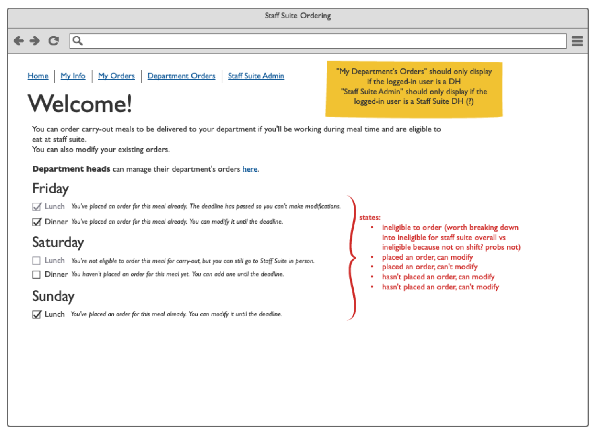

a case study by shir goldberg
Table of Contents
A case study about a new product I led the creation of for a non-profit organization.
Super MAGFest, MAGFest Inc's flagship event, is a yearly festival devoted to video games, music, and video game music. Each January, 25,000 people congregate in the halls of the Gaylord National Harbor Convention Center for their favorite long weekend of the year. Between an arcade with hundreds of cabinets, around-the-clock concerts, tons of panels, and attendees in fantastic costumes, it's always an incredible time.
I've been working with MAGFest since 2014, most of that time spent running their Registration department. However, one of my favorite things about MAGFest is its open structure. Across the entire organization, people have a huge degree of freedom for finding (or starting) projects that interest them and solve real problems, and are empowered to build teams and execute on those projects. In 2019, I led one of those projects.
In 2019, I acted as product/project manager for an effort to redesign a long-broken internal MAGFest workflow.
During MAGFest's yearly event, staffers have access to a staff suite. The staff suite serves 3 meals a day and will package meals for carryout if staffers don't have time to eat in the suite. In prior years, carryout orders were submitted via paper forms. These forms were filled out by department staffers each meal and then carried up to staff suite. Staff suite workers would then find some way to notify the department head when the food was ready, and someone would be sent to carry the food back down.
This workflow posed a number of problems. The paper forms were easy to lose or forget about. There was no unified notification system for letting the right parties know when their food was ready. And often by the time the food arrived, the people who had ordered it had already left.
I started the project by creating a list of stakeholders and a draft of a product requirements doc based on my knowledge of the problem space. I worked with the stakeholders to flesh the document out and create all necessary user stories. After requirements had been locked down, I created a diagram outlining the high level workflow, then drilled into more specifics by creating wireframes in Balsamiq.
Once that work was completed, I worked with a developer to implement it. Throughout the process, I held check-ins and offered support to team members as needed.
The system launched in time for Super MAGFest 2020 and was greatly successful!
Below is a slightly modified version of the PRD I created for this work.
[list redacted]
Our goal is to replace Staff Suite's current paper ordering system with a more robust, easy-to-use, and less failure-prone electronic method.
This work is expected to greatly simplify Staff Suite's operations and provide them with better data to inform their decisions about resource allocation and time management, as well as creating an easy experience for staff and department heads to get their food.
We are not looking to change the overall workflow or carryout process Staff Suite has in place.
We are not looking to reimplement Staff Suite's informational website (though this work will supplement it).
As a staffer...
I want to make sure I get food when I'm on shift.
I want to have control over submitting my food order.
I want my order to be bundled with the correct department
I want to be able to place my order ahead of time.
I want to make sure my dietary restrictions are clearly listed.
I want to know what is in the food I am ordering (allergens).
I want to know what my food choices are.
I want to be appropriately notified when my order is ready.
I want to know approximately when my order will be ready.
As a department head...
I want to make sure all of my staffers get fed.
I want to take care of meal ordering ahead of time.
I want to do the least amount of work possible to feed my staff.
I want to be appropriately notified when my order is ready.
I want to know approximately when my order will be ready.
I want to submit orders by a more durable medium than paper.
I want to be able to send a message to staff suite with our order
As a Staff Suite staffer...
I want to know how many orders we're expecting.
I want to get my orders submitted as early as possible
I want to start filling orders as early as possible (~1 hr before service)
I want to have orders submitted by a more durable medium than paper.
I want to know which orders go to which department.
I want to know how to notify departments when their order is ready.
I want to know when the department was notified
I want to know which ingredients to put in each order.
I want to know which carryout orders have deadlines (musicians, stagehands, etc).
I want to only fill carryout orders for staffers on shift during meal times.
I want to only fill carryout orders for eligible volunteers.
Orders are submitted.
Orders are fulfilled.
Orders are picked up.
Features are broken down by workflow step. Features that I (Shir) am not sure are required are in italics, along with notes on things that need clarification. Features will need to be broken down into critical/non-critical, and prioritized. This list should be reviewed thoroughly before development starts.
Order Submission:
Staffers can view meal information, including allergens, for a given meal.
Staffers can submit dietary information with their order.
Staffers should only need to submit their dietary restrictions once.
Orders are tied to specific departments.
Staffers may only submit orders within a department 'bundle'
Staffers can specify which department their order should be bundled with for pickup.
Department Heads review and approve bundled orders on behalf of their staffers.
Department Heads can submit special instructions with their department's order.
Department Heads can submit Slack contact information.
Department Heads can submit their department's overall order.
Department Heads can submit contact information on an overall or per-meal basis (for example if different managers are on shift for different meals).
Department Heads can submit contact information outside of Slack for meal notifications (e.g. phone, email).
Orders can be submitted ahead of time.
Orders are validated against shifts to make sure nobody is submitting an order who can come to suite. (Department Heads may override this on a case-by-case basis)
Ordering for a meal can be closed once the meal time has passed.
Orders should be changeable after submission if and only if the order has not started being fulfilled.
Order Fulfillment:
Staff Suite receives a tidy and cohesive report of orders requested that updates in real time.
Orders are printed on stickers with badge number, department bundle, and details
Order sticker contains information as mocked up here.
Order sticker contains:
First preferred name (not first legal name)
Badge number
Order date and time
Food restrictions
Contents of order
Staff Suite receives contact information for each department.
Staff Suite receives any special notes submitted for each department.
Staff Suite sets a time after which submitted orders cannot be modified.
Staff Suite can mark department orders as in progress, which prevents further changes to the order.
Staff Suite can mark department orders as ready for pickup.
Order Delivery:
Staff Suite can automatically notify departments through their preferred mechanism when their order is marked as complete.
Staff Suite can manually follow up with departments if food is not picked up.
Nice-to-haves:
Alert DHs when staffers haven't requested a meal for which they are eligible
Provide estimated pickup times to staffers and/or DHs. (this is probably an easier one to build)
Departments can acknowledge their receipt of the message and that they are sending someone to get the order.
Have system automatically check person's selected allergies against foods in their order and warn them if they have something on an order that contains an allergen they selected (added by Wombat3)
Add option to allow DH to mark an order as time-sensitive. This will highlight the order in the department orders list so that orders for a department such as perhaps Concerts can request food to be ready at a specific time and Staff Suite can take that into account as they build orders. (Wombat3)(useful? Bad idea? Dunno lol)
Is eligible for staff suite:
is staff
is guest
is volunteer but is signed up for more than 10 hours and has worked first shift
Is eligible for staff suite carryout:
is eligible for staff suite
is working during the entirety of the meal period
More business logic is outlined in the wireframes.

Wireframes were created in Balsamiq. You can view the exported PDF.
Thanks to the work of one very dedicated developer, the system was completed in time for MAGFest's January event. Some reactions from happy users:
Of course, there's always more work to be done. I'm excited to see where the next year takes us!
Return to top ↵